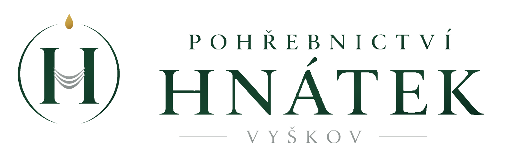

ROUND 2 · G · NEW
Tichá krajina
For a firm in a rural region that wants the site to feel like air and distance, not like a shop. The page is one long, slow scroll: short text sections alternate with full-bleed photographs of the local landscape, commissioned, without people and never in the first screen. The nonstop number is set as one long ruled line, a “stamp”, after the opening and again before the footer, so it is found at both ends of the read.
- Density
- airy; wide margins, long measure, big gaps
- Page flow
- long story scroll; text sections alternate with landscape interludes
- Colour
- light mist with a deep spruce-blue, or linen with olive-brown
- Photos
- full-bleed local landscapes between sections; no people, no sunsets; never above the fold
- Navigation
- plain top bar with text nav (1280); “Menu” list (375)
- Emergency
- the stamp line after the opening and again before the footer
- Notices
- calm list; optional photo the family chose (portrait or a landscape)
Palettes (switch in Tweaks)
1 · Mlha · ground #EEF1F0
ink #1B2422 14.0 : 1 · muted #4C5856 6.5 : 1
spruce-blue #2F5160 7.5 : 1 · white on it 8.5 : 1 · rules #7E8A88 3.1 : 1
2 · Len · ground #F3EFE7
ink #24211C 14.0 : 1 · muted #59534A 6.6 : 1
olive-brown #6B5A3A 5.8 : 1 · white on it 6.7 : 1 · rules #8F8676 3.1 : 1

Cool mist and a blue accent leave the logo’s green and gold on their own.
Type: Spectral 400 / 600 + Figtree 500 (OFL, latin-ext)
Production Type; Erik Kennedy. A light screen serif at large sizes, a plain sans only for labels and navigation. Alternative: Gelasio + Figtree.
Ve dne, v noci i o svátcích
400 · Příliš žluťoučký kůň úpěl ďábelské ódy
600 · Příliš žluťoučký kůň úpěl ďábelské ódy
Sans 500 · Příliš žluťoučký kůň úpěl ďábelské ódy
Scale: 20 body / 1.65 · 24 lead · 38 / 72 H1 · 30 / 44 H2. Spacing 12 · 24 · 48 · 96 · 144. Separation: the photographs themselves, plus two 1 px ink rules around the stamp line. Photos need a client shoot (proposal: field landscapeImages[] with caption and place).
Home · 1280 · Len · first photo band starts below the first screen
Pohřební služba ve Vyškově a okolí
Rodinná firma se 40letou tradicí. Převezeme zesnulého, vyřídíme úřední věci a připravíme pohřeb s obřadem i bez obřadu.
Nonstop převoz zesnulých
+420 000 000 199
ve dne, v noci i o svátcích
Zástupný obrázek · zakázková fotografie krajiny u Vyškova, ráno, bez lidí · na celou šířku, 1280 × 440, AVIF
Drahanská vrchovina nad Vyškovem
Pohřeb s obřadem i bez obřadu
Pohřeb může být i bez obřadu. Rozloučit se pak můžete později, doma nebo v přírodě. Obojí připravíme stejně pečlivě.
Co je v ceně a kolik to stojí
800 px
The first band is placed after the first text section so that the largest paint on load stays text (funeral-ux §4b). Without photos the bands collapse into 96 px of space and the page still reads as a calm sequence. High emphasis: the stamp line also appears directly under the header on every page, before the H1.
Notice · 375 · with photo · livestream
Oznámení zveřejňuje Pohřební služba Vzor. Telefon nonstop +420 000 000 199
Zástupný obrázek · fotografie, kterou vybrala rodina: portrét nebo krajina
ZÁSTUPNÉ JMÉNO · SMYŠLENÁ OSOBA
Marie Dvořáková
* 3. 4. 1941 † 2. 11. 2026
Rozloučení se koná v pátek 14. 11. 2026 v 10:00 ve smuteční síni ve Vyškově.
Občanský obřad
Mapa: Smuteční síň, Hřbitovní 3, Vyškov
Sledovat přenos obřadu
Vysílá smuteční síň, od 10:00.
Od rodiny
Děkujeme všem, kdo přijdou. Místo květin můžete přinést větvičku ze své zahrady. ZÁSTUPNÝ TEXT
Kondolence
Kondolenci můžete poslat rodině prostřednictvím pohřební služby na kancelar@vzor.example. Předáme ji.
667 px
Neutral form: the stamp line becomes one plain sentence in muted text, no rules, no accent, no service word. No landscape bands on notice pages. ⚖ L1.